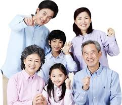

가족의 관계
- 부모
- 형제
- 부부
- 자녀
가족(家族)

가족(家族)은 대체로 혈연, 혼인, 입양, 친분 등으로 관계되어 같이 일상의 생활을 공유하는
사람들의 집단(공동체) 또는 그 구성원을 말한다. 집단을 말할 때는 가정이라고도 하며,
그 구성원을 말할 때는 가솔(家率) 또는 식솔(食率)이라고도 한다.
많은 사회는 가족의 범위를 법률이나 그 외의 규범으로 규정하고 있다. 세계인권선언의 16조 3항에 따르면,
“가정은 사회의 자연적이고 기초적인 단위이며, 사회와 국가의 보호를 받을 권리가 있다”라고 한다.